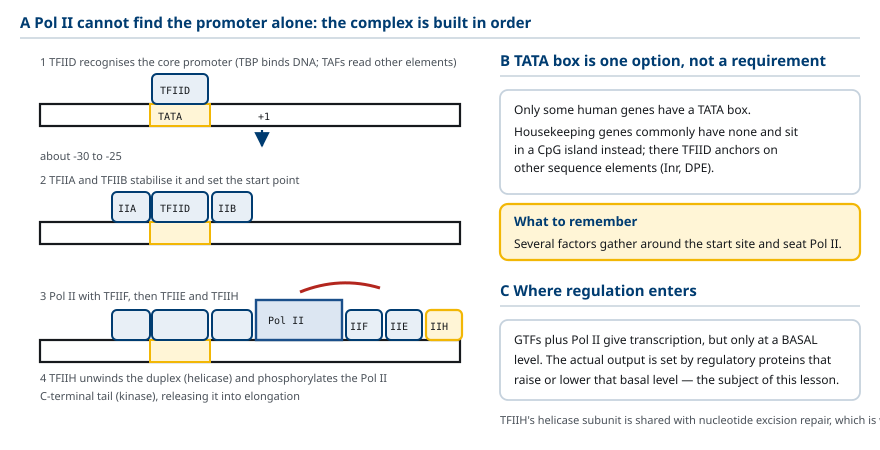
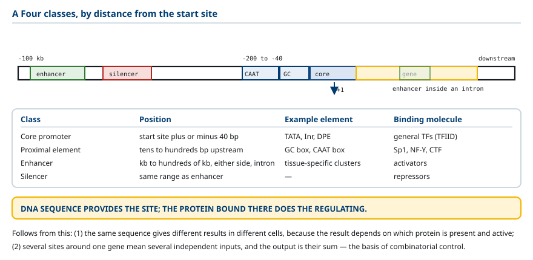
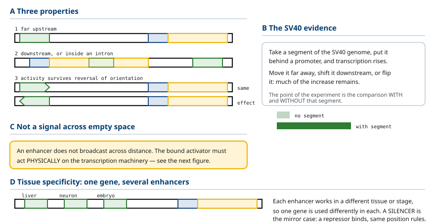
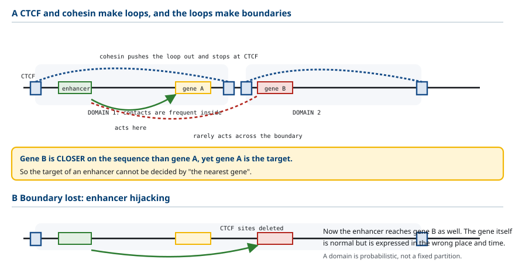
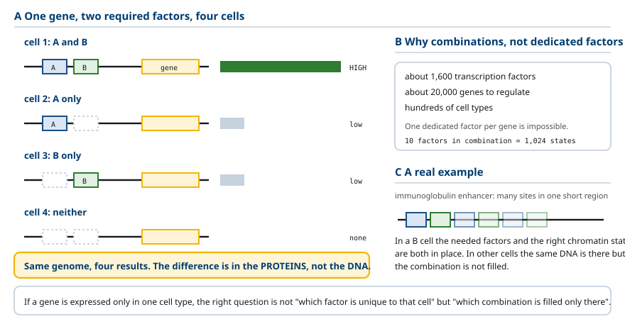
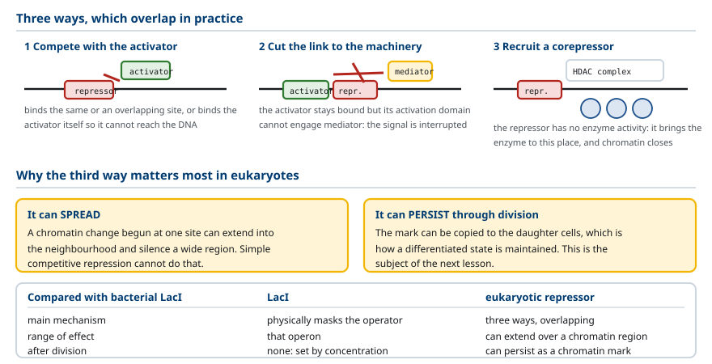
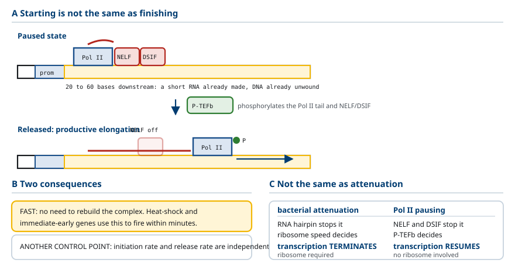

M03-W04-L03 · 분자유전학과 계통별 의학생화학특론
전사인자·enhancer와 조절 네트워크
Transcription Factors, Enhancers and Regulatory Networks
학습목표
- 핵심 promoter와 일반 전사인자의 역할을 구분하고 TATA box가 모든 진핵 유전자에 있지 않다는 사실이 뜻하는 바를 쓴다.
- 인접 조절서열과 서열 특이적 전사인자의 관계를 설명하고 'DNA는 자리를 제공하고 단백질이 조절한다'는 정식으로 정리한다.
- Enhancer의 정의를 쓰고 위치와 방향에 비교적 구애받지 않는다는 성질을 SV40 실험의 논리로 설명한다.
- DNA 고리와 mediator가 멀리 떨어진 enhancer의 작용을 가능하게 하는 방식을 설명하고 염기서열상 거리와 핵 안의 물리적 거리를 구분한다.
- Chromatin domain과 CTCF·cohesin의 역할을 설명하고 enhancer의 표적을 '가장 가까운 유전자'로 판단할 수 없는 이유를 쓴다.
- 전사인자의 모듈 구조를 DNA 결합 도메인과 활성화 도메인으로 나누고 두 도메인의 결함이 서로 다른 결과를 낳는다는 것을 예측한다.
- 주요 DNA 결합 도메인 네 유형의 구조적 특징과 대표 전사인자를 구분한다.
- 조합 조절의 논리를 두 인자의 존재 여부로 설명하고 적은 수의 인자로 많은 발현 상태를 만드는 구조를 쓴다.
- 진핵 억제인자가 전사를 낮추는 세 가지 방식을 구분하고 세균의 LacI와 다른 점을 지목한다.
- Pol II 일시정지의 기전을 NELF·DSIF·P-TEFb로 설명하고 전사량이 개시 빈도만으로 정해지지 않는 이유를 쓴다.
선수지식
- M03-W04-L02 유전자 발현 조절의 원리와 조절 단위 — cis·trans, 양성·음성 조절, 진핵세포의 네 조건
- M03-W02-L02 RNA의 종류와 전사의 기전 — RNA polymerase II, 전사의 세 단계
- M01-W06-L02 유전자와 유전체의 구성 — 유전자 구조, intron과 exon
강의 구성
- 1. 핵심 promoter와 일반 전사인자
- 2. 인접 조절서열과 서열 특이적 전사인자
- 3. Enhancer: 거리와 방향에 덜 구애받는 조절영역
- 4. DNA 고리와 mediator
- 5. Chromatin domain과 enhancer의 표적 판정
- 6. 전사인자의 모듈 구조와 DNA 결합 도메인
- 7. 조합 조절: 같은 유전체에서 다른 발현
- 8. 진핵 억제인자와 공동억제인자
- 9. Pol II 일시정지: 개시 후의 조절
- 10. 전사인자 이상이 만드는 질환과 전사를 표적으로 하는 치료
1. 핵심 promoter와 일반 전사인자
진핵세포의 단백질 유전자는 RNA polymerase II가 전사한다. 그런데 Pol II는 혼자서 promoter를 인식하지 못한다. 세균의 RNA polymerase가 σ 인자를 데리고 promoter에 직접 붙는 것과 달리, Pol II는 여러 단백질이 먼저 자리를 잡아 주어야 한다.
핵심 promoter(core promoter) 는 전사 개시점 주변의 DNA 영역이며, 전사가 시작되는 위치를 정하는 데 관여한다. 여기에 일반 전사인자(general transcription factor, GTF) 들이 모여 전사 개시 전 복합체(preinitiation complex) 를 만든다. '일반'이라는 말은 특정 유전자에만 쓰이는 것이 아니라 많은 유전자의 기본 전사 과정에 공통으로 필요하다는 뜻이다.
조립 순서는 다음과 같다.
1. TFIID가 핵심 promoter를 인식한다. TFIID의 구성 요소인 TBP(TATA-binding protein)가 DNA에 결합하고, TAF라 부르는 나머지 소단위들이 다른 서열 요소를 인식한다. 2. TFIIA와 TFIIB가 결합해 복합체를 안정화하고 전사 개시점의 위치를 정한다. 3. Pol II와 TFIIF가 함께 들어온다. 4. TFIIE와 TFIIH가 마지막에 결합한다. TFIIH는 helicase 활성으로 DNA 이중나선을 풀고, kinase 활성으로 Pol II의 C 말단 꼬리를 인산화한다. 이 인산화가 Pol II를 promoter에서 떼어 신장 단계로 보낸다.
TATA box는 핵심 promoter에서 볼 수 있는 서열 요소의 한 종류다. 전사 개시점 상류 약 25~30 염기에 있고 TBP가 인식한다. 여기서 흔한 오해를 바로잡아야 한다. 모든 진핵 유전자가 TATA box를 가지는 것은 아니다. 사람의 유전자 가운데 TATA box를 가진 것은 일부이며, 특히 항시 발현 유전자는 TATA box 없이 CpG island에 있는 경우가 많다. TATA box가 없는 promoter에서는 TFIID가 다른 서열 요소를 통해 자리를 잡는다.
따라서 핵심 promoter에서 기억해야 할 것은 특정 서열의 이름이 아니라 여러 인자가 전사 개시점 주변에 모여 Pol II를 앉힌다는 사실이다.
여기서 조절의 여지가 생긴다. GTF와 Pol II만 있으면 전사는 일어나지만 기본 수준(basal level) 에 머문다. 실제 유전자의 발현량은 이 기본 수준을 올리거나 내리는 조절 단백질들이 정한다. 그 단백질들이 이 수업의 주제다.

2. 인접 조절서열과 서열 특이적 전사인자
핵심 promoter 주변에는 조절 단백질이 인식하는 짧은 서열들이 있다. 전사 개시점에서 수십에서 수백 염기 안쪽에 있으므로 인접 조절서열(proximal regulatory element) 이라 한다. 대표적인 것이 GC box(GGGCGG 계열)와 CAAT box다.
이 서열들에 결합하는 단백질이 서열 특이적 전사인자(sequence-specific transcription factor) 다. GC box에는 Sp1이, CAAT box에는 NF-Y나 CTF/NF-1 계열이 결합한다. 결합한 전사인자는 일반 전사인자나 다른 조절 단백질과 상호작용해 전사량을 바꾼다.
'서열 특이적'이라는 말의 의미를 분명히 해야 한다. 그 단백질이 DNA의 어떤 염기 배열에 더 잘 결합하는지를 구별한다는 뜻이다. 전사인자는 유전체 전체를 돌아다니지만 자신이 인식하는 서열에서 머무는 시간이 길다. 이 차이가 특정 유전자에만 작용하는 선택성을 만든다.
여기서 이 수업 전체를 지탱하는 정식이 나온다.
이 정식에서 두 가지가 따라 나온다.
첫째, 같은 DNA 서열이 세포에 따라 다른 결과를 낳는다. 결합할 전사인자가 없는 세포에서는 그 서열이 아무 일도 하지 않는다. 앞 수업의 cis·trans 구별이 여기서 다시 쓰인다.
둘째, 하나의 유전자 주변에 결합 자리가 여러 개 있으면 여러 조절 단백질이 함께 작용한다. 각 자리가 독립적인 입력이 되고, 유전자의 발현량은 그 입력들의 합으로 정해진다. 7절에서 다룰 조합 조절의 토대다.
진핵세포의 조절서열을 거리에 따라 정리하면 다음과 같다.
| 구분 | 위치 | 대표 요소 | 결합하는 분자 |
|---|---|---|---|
| 핵심 promoter | 전사 개시점 ±40 염기 | TATA box, Inr, DPE | 일반 전사인자 (TFIID 등) |
| 인접 조절서열 | 상류 수십~수백 염기 | GC box, CAAT box | 서열 특이적 전사인자 (Sp1, NF-Y) |
| Enhancer | 수천~수십만 염기, 양방향, intron 내부도 가능 | 조직 특이적 요소의 집합 | 활성인자 (activator) |
| Silencer | enhancer와 같은 범위 | — | 억제인자 (repressor) |

3. Enhancer: 거리와 방향에 덜 구애받는 조절영역
Enhancer는 전사 활성인자가 결합해 표적 유전자의 전사를 높이는 DNA 조절영역이다. 인접 조절서열과 구분되는 성질이 세 가지 있다.
1. 멀리 떨어져 있을 수 있다. 수천에서 수십만 염기쌍 떨어진 경우가 흔하다. 2. 유전자의 상류뿐 아니라 하류나 intron 안에 있을 수도 있다. 3. 방향이 바뀌어도 활성이 유지되는 경우가 있다. 뒤집어 넣어도 작용한다.
이 세 성질은 처음 발견되었을 때 당시의 조절 모형으로 설명되지 않았다. 세균의 operator처럼 promoter 바로 옆에 있어야 작용한다는 생각과 맞지 않았기 때문이다.
증거의 논리를 보아야 한다. SV40 바이러스의 유전체에서 특정 구간을 찾아 어떤 promoter 뒤에 붙여 넣으면 그 promoter의 전사가 크게 증가했다. 이 구간을 promoter에서 멀리 떨어뜨려도, 유전자의 하류로 옮겨도, 방향을 뒤집어도 증가 효과가 상당 부분 유지되었다. 실험의 핵심은 그 구간을 넣었을 때와 넣지 않았을 때를 비교했다는 것이고, 결론은 이 구간이 위치와 방향에 비교적 구애받지 않고 전사를 올린다는 것이다.
여기서 enhancer를 오해하지 않아야 할 지점이 있다. Enhancer는 거리를 뛰어넘어 막연히 신호를 보내는 것이 아니다. 결합한 활성인자가 전사 기계에 물리적으로 작용해야 하며, 그것을 가능하게 하는 것이 다음 절의 DNA 고리와 mediator다.
Enhancer의 또 하나의 성질이 조직 특이성이다. 하나의 유전자가 여러 enhancer를 가지고, 각 enhancer가 서로 다른 조직이나 발달 단계에서 작동하는 경우가 많다. 그 결과 같은 유전자가 조직마다 다른 양으로, 다른 시기에 발현된다. 발달 과정에서 하나의 유전자가 여러 곳에서 서로 다르게 쓰이는 방식이 이 구조에서 나온다.
Silencer는 반대 방향으로 작동하는 조절영역이며, 억제인자가 결합한다. 위치와 방향에 대한 성질은 enhancer와 비슷하다.

4. DNA 고리와 mediator
염기서열 위에서 일직선으로 그리면 enhancer와 promoter는 멀리 떨어져 보인다. 그러나 핵 안의 DNA는 여러 방향으로 접힌다. 사이의 DNA가 고리(loop)를 이루면 enhancer에 결합한 단백질이 promoter의 전사 복합체와 물리적으로 가까워진다.
여기서 반드시 분리해야 하는 두 개의 거리가 있다.
- 염기서열상 거리(genomic distance): DNA를 일직선으로 펴 놓았을 때의 염기 수
- 핵 안의 물리적 거리(spatial distance): 실제로 접힌 상태에서의 삼차원 거리
두 거리는 다를 수 있다. 염기서열상 10만 염기 떨어진 두 지점이 물리적으로는 맞닿아 있을 수 있고, 반대로 1만 염기 떨어진 두 지점이 서로 다른 고리에 속해 거의 접촉하지 않을 수도 있다. 조절 관계를 판단할 때 염기서열상 거리만으로는 부족하다.
접촉이 만들어진 뒤에도 문제가 남는다. Enhancer에 결합한 활성인자가 Pol II와 항상 직접 접촉하는 것은 아니다. 이 사이를 연결하는 것이 mediator다. Mediator는 20개 이상의 소단위로 이루어진 큰 복합체이며, 한쪽으로는 활성인자의 활성화 도메인과, 다른 쪽으로는 Pol II와 일반 전사인자와 상호작용한다. 그 결과 개시 복합체의 형성과 작동이 촉진된다.
Mediator는 공동활성인자(coactivator) 의 대표적인 예다. 공동활성인자와 전사인자의 차이를 분명히 해야 한다.
| 구분 | 서열 특이적 전사인자 (활성인자) | 공동활성인자 |
|---|---|---|
| DNA 서열 인식 | 한다 | 하지 않는다 |
| 작용 방식 | 표적 DNA에 결합해 신호를 가져온다 | 결합한 활성인자의 작용을 전달·증폭한다 |
| 선택성의 근거 | 자신의 DNA 결합 도메인 | 어떤 활성인자가 불러왔는지 |
| 예 | Sp1, NF-κB, 핵수용체 | mediator, CBP/p300, SRC 계열 |
공동억제인자(corepressor) 도 같은 논리로 정의된다. 억제인자가 불러오고, 그 자리에서 전사를 낮추는 작용을 수행한다. 대표적인 것이 histone deacetylase를 포함하는 복합체다.
이 구조를 '모집(recruitment)'이라고 표현하는 경우가 많다. 그 말의 정확한 의미는 단백질끼리 결합해 조절 복합체가 그 DNA 주변에 머무르게 된다는 것이다. 어디선가 불러온다는 뜻이 아니라, 결합에 의해 국소 농도가 올라간다는 뜻이다.

5. Chromatin domain과 enhancer의 표적 판정
Enhancer가 DNA 고리를 통해 작용한다면, 어떤 promoter와 고리를 이루는지가 그 enhancer의 표적을 정한다. 이 접촉의 범위를 제한하는 구조가 chromatin domain이다.
핵 안의 DNA는 특정 부위들이 서로 자주 접촉하는 영역으로 나뉜다. 이 영역 안에서는 접촉이 빈번하고 영역을 넘는 접촉은 상대적으로 드물다. 이런 영역을 TAD(topologically associating domain)라 부른다.
경계를 만드는 데 관여하는 단백질이 두 가지다.
- CTCF: 특정 DNA 서열에 결합하는 전사인자이며, 경계 기능을 가진다.
- Cohesin: 고리를 조이는 복합체다. DNA를 통과시키며 고리를 키우고, CTCF가 결합한 자리에서 멈춘다.
두 단백질의 작용으로 CTCF 결합 자리 사이에 고리가 만들어지고, 그 안쪽이 하나의 접촉 영역이 된다.
이 구조에서 중요한 결론이 두 가지 나온다.
첫째, enhancer는 주변의 모든 promoter에 똑같이 작용하지 않는다. 같은 영역 안에 있는 promoter와는 자주 접촉하지만 경계 너머의 promoter와는 그렇지 않다. 따라서 enhancer의 표적을 '염기서열상 가장 가까운 유전자'로 판단할 수 없다. 가장 가까운 유전자가 경계 너머에 있고, 더 먼 유전자가 같은 영역 안에 있을 수 있다.
둘째, 경계가 바뀌면 원래 접촉하지 않던 부위가 가까워진다. 염색체 재배열이나 결실로 CTCF 결합 자리가 사라지면, enhancer가 원래 표적이 아닌 유전자에 작용하게 된다. 이를 enhancer 하이재킹이라 한다. 유전자 자체는 정상인데도 잘못된 시기와 장소에서 발현되어 질환이 생긴다.
한 가지 단서를 붙여야 한다. Domain은 모든 접촉을 완전히 차단하는 고정된 칸막이가 아니다. 경계를 넘는 접촉도 일어나며, 경계의 강도도 유전체 위치와 세포 종류에 따라 다르다. 확률적인 구조로 이해해야 한다.

6. 전사인자의 모듈 구조와 DNA 결합 도메인
전사인자는 두 가지 일을 함께 해야 한다. 표적 DNA를 찾는 일과 그 자리에서 전사를 바꾸는 일이다. 두 일은 서로 다른 영역이 담당하며, 이 구조를 모듈 구조(modular structure) 라 한다.
- DNA 결합 도메인(DNA-binding domain, DBD): 특정 염기서열을 인식해 결합한다.
- 활성화 도메인(activation domain, AD): Mediator, 일반 전사인자, chromatin 조절 인자와 상호작용한다. 억제인자에서는 억제 도메인이 공동억제인자와 상호작용한다.
여기에 조절 도메인(ligand 결합 부위, 인산화 부위, 핵 수송 신호 등)이 더해지는 경우가 많다.
모듈 구조에서 예측이 나온다. 두 도메인의 결함은 서로 다른 결과를 낳는다.
- DBD는 정상, AD가 손상: 전사인자가 표적 DNA에 결합하지만 전사를 활성화하지 못한다. 더 나아가 그 자리를 차지하고 있으면서 정상 인자의 결합을 막아 우성 음성(dominant negative) 효과를 낼 수 있다.
- AD는 정상, DBD가 손상: 표적을 찾지 못하므로 올바른 위치에서 작용하지 못한다. 단순한 기능 상실이다.
이 예측은 실험으로도, 환자의 변이 분석으로도 확인된다. 같은 유전자의 변이가 어느 도메인에 있는지에 따라 유전 양상(우성인지 열성인지)과 증상의 중증도가 달라진다.
모듈 구조의 또 다른 증거가 도메인 교환 실험이다. 한 전사인자의 DBD에 다른 전사인자의 AD를 이어 붙이면, 첫 번째 인자가 인식하는 서열에서 두 번째 인자의 활성화 기능이 나타난다. 두 기능이 분리 가능하다는 것을 직접 보인 결과이며, 오늘날 효모 두 잡종 분석과 CRISPR 활성화 도구의 설계 원리이기도 하다.
DNA 결합 도메인은 구조에 따라 몇 가지 유형으로 분류된다.
| 유형 | 구조적 특징 | 금속 이온 | 대표 전사인자 |
|---|---|---|---|
| Helix-turn-helix | 두 α helix가 짧은 선회로 연결, 한쪽이 major groove에 들어간다 | 없음 | homeodomain 단백질 (HOX), Pit-1 |
| Zinc finger | Cys와 His가 Zn²⁺을 붙잡아 손가락 모양 고리를 만든다 | Zn²⁺ 필요 | Sp1, 핵수용체, GATA 계열 |
| Leucine zipper | 두 분자의 α helix가 leucine 면끼리 맞물려 이량체를 만든다 | 없음 | C/EBP, Jun·Fos (AP-1), CREB |
| Helix-loop-helix | helix–고리–helix가 이량체를 만든다 | 없음 | MyoD, Myc, SREBP |
이 표에서 읽어야 할 공통 원리가 있다. 대부분의 전사인자는 이량체 또는 그 이상의 복합체로 작용한다. 이량체를 이루면 인식하는 서열이 길어져 선택성이 올라가고, 어떤 상대와 짝을 이루는지에 따라 작용이 달라질 수 있다. Jun과 Fos가 짝을 이룬 AP-1, Myc이 Max와 짝을 이루는 것이 예다. 짝 선택이 그 자체로 조절 수단이 된다.

7. 조합 조절: 같은 유전체에서 다른 발현
세포마다 발현 양상이 다른 이유를 이제 분자 수준에서 설명할 수 있다. 세포마다 이용할 수 있는 전사인자의 조합이 다르기 때문이다.
가장 단순한 모형으로 보자. 어떤 유전자의 조절영역에 A와 B 두 전사인자가 함께 결합해야 전사가 잘 일어난다고 하자.
- A와 B를 모두 가진 세포: 높은 발현
- A만 가진 세포: 같은 DNA 서열이 있어도 충분히 활성화되지 않는다
- B만 가진 세포: 같은 결과
- 둘 다 없는 세포: 발현 없음
같은 유전체를 가진 네 세포가 네 가지 다른 결과를 보인다. 차이는 DNA가 아니라 그 세포에 있는 단백질에 있다.
실제 유전자에는 여러 조절서열과 인자가 관여하므로 조합의 수가 훨씬 많다. 그리고 세포마다 인자의 양, 활성 상태(인산화 등의 수식), 핵 안의 위치가 다르므로 조합의 효과가 더 세분된다. 이것이 조합 조절(combinatorial control) 이다.
조합 조절이 해결하는 문제는 경제성이다. 사람의 전사인자는 약 1,600개로 추정되는데, 조절해야 하는 유전자는 약 2만 개이고 세포 종류는 수백 가지다. 유전자마다 전용 전사인자를 하나씩 두는 방식으로는 불가능하다. 적은 수의 인자를 조합으로 쓰면 가능한 상태의 수가 지수적으로 늘어난다. 인자 10개로 만들 수 있는 조합은 1,024가지다.
구체적인 예가 면역글로불린 enhancer다. 하나의 enhancer 안에 서로 다른 전사인자가 인식하는 여러 결합 자리가 모여 있다. 각 자리는 특정 인자의 자리이고, 면역글로불린을 발현하는 B 세포에서는 그 인자들과 적절한 chromatin 상태가 함께 갖추어진다. 다른 세포에서는 같은 DNA가 있어도 조합이 채워지지 않는다.

8. 진핵 억제인자와 공동억제인자
앞 수업에서 본 세균의 LacI는 operator를 차지해 RNA polymerase가 전사를 시작하는 것을 물리적으로 막았다. 진핵 억제인자는 그 방식만 쓰지 않는다. 세 가지 방식이 있고, 실제로는 겹쳐 작동한다.
방식 1: 활성인자의 결합을 방해한다. 억제인자가 활성인자와 같은 서열이나 겹치는 서열에 결합해 경쟁한다. 또는 활성인자와 직접 결합해 DNA에 붙지 못하게 한다. 가장 단순한 경쟁적 억제다.
방식 2: 활성인자와 전사 기계의 상호작용을 줄인다. 활성인자가 DNA에 결합한 상태에서도 그 활성화 도메인이 mediator와 상호작용하지 못하게 한다. 활성인자의 결합 자체는 막지 않지만 신호 전달을 끊는다. 앞 절에서 본 우성 음성 효과도 이 범주에 가깝다.
방식 3: 공동억제인자를 불러와 chromatin을 바꾼다. 억제인자가 histone deacetylase(HDAC) 나 histone methyltransferase를 포함한 복합체와 결합하면, 그 효소들이 그 자리에서 작용해 chromatin을 접근하기 어려운 상태로 만든다. 억제인자 자신은 효소 활성이 없고, 효소를 그 위치에 데려오는 역할을 한다.
방식 3이 진핵세포의 조절에서 특히 중요하다. 이유는 두 가지다.
첫째, 효과가 국소 범위를 넘어 퍼질 수 있다. 하나의 결합 자리에서 시작한 chromatin 변화가 주변으로 확장되어 넓은 영역을 끌 수 있다. 단순한 경쟁적 억제로는 불가능한 일이다.
둘째, 효과가 세포 분열 뒤에도 유지될 수 있다. 이 점이 다음 수업(후성유전 조절)의 주제이며, 분화된 상태가 유지되는 기전의 핵심이다.
여기서 다음 수업으로의 연결이 생긴다. 전사인자의 작용을 이해하려면 DNA의 포장 상태를 함께 보아야 한다. 전사인자가 결합하는 것이 chromatin을 바꾸고, chromatin 상태가 다시 다른 전사인자의 결합 가능성을 바꾼다. 두 층위가 서로를 조절한다.
| 비교 항목 | 세균의 LacI | 진핵 억제인자 |
|---|---|---|
| 주된 방식 | operator를 물리적으로 가린다 | 세 방식이 겹쳐 작동한다 |
| 효소 활성 | 없음 | 없음 (공동억제인자가 가진다) |
| 효과의 범위 | 그 operon | 넓은 chromatin 영역까지 확장 가능 |
| 분열 후 유지 | 없음 (농도로 결정) | chromatin 표지로 유지 가능 |

9. Pol II 일시정지: 개시 후의 조절
전사량은 전사를 얼마나 자주 시작하는지만으로 정해지지 않는다. 시작한 polymerase가 끝까지 진행하는 비율도 전사량을 정한다.
Pol II가 전사를 시작했다고 해서 항상 유전자 끝까지 곧바로 진행하는 것은 아니다. 많은 유전자에서 Pol II는 전사 개시점에서 하류 20~60 염기 부근에서 잠시 멈춘다. 이를 promoter-proximal pausing(전사 개시점 근접 일시정지) 이라 한다.
일시정지를 유지하는 인자와 푸는 인자가 구분된다.
- 유지: NELF(negative elongation factor)와 DSIF가 Pol II와 결합해 멈춘 상태를 유지한다.
- 해제: P-TEFb가 Pol II의 C 말단 꼬리와 NELF·DSIF를 인산화하면 NELF가 떨어지고 DSIF의 성질이 바뀌어, Pol II가 생산적인 신장으로 넘어간다.
이 기전이 가지는 조절상의 의미가 두 가지 있다.
첫째, 반응이 빨라진다. 일시정지 상태의 Pol II는 이미 promoter에 앉아 DNA를 풀고 짧은 RNA를 만든 상태다. 신호가 오면 개시 복합체를 새로 조립할 필요 없이 인산화만으로 즉시 신장을 시작할 수 있다. 열 충격 유전자나 즉시 초기 유전자처럼 수 분 안에 대량 발현되어야 하는 유전자에서 이 방식이 쓰인다.
둘째, 조절 지점이 하나 늘어난다. 개시 빈도를 바꾸는 조절과 일시정지 해제율을 바꾸는 조절이 독립적으로 작동할 수 있다. 어떤 활성인자는 개시를 늘리고, 어떤 활성인자는 P-TEFb를 데려와 해제를 늘린다.
앞 수업에서 강조한 구분을 여기서 다시 확인해야 한다. Pol II 일시정지와 세균의 attenuation은 같은 '개시 후 조절'이라는 범주에 들어가지만 분자 기전을 공유하지 않는다.
| 비교 항목 | 세균의 attenuation | 진핵 Pol II 일시정지 |
|---|---|---|
| 멈추게 하는 것 | 리더 RNA의 종결 2차 구조 | NELF와 DSIF 단백질 |
| 결정하는 신호 | ribosome의 진행 속도 | P-TEFb의 인산화 |
| 결과 | 전사가 종결된다 | 전사가 재개될 수 있다 |
| ribosome의 관여 | 필수 | 없음 |
마지막 행의 차이가 결정적이다. Attenuation은 전사를 끝내는 기전이고, 일시정지는 전사를 보류하는 기전이다.

10. 전사인자 이상이 만드는 질환과 전사를 표적으로 하는 치료
전사인자의 작용을 세웠으므로 질환을 체계적으로 읽을 수 있다. 네 범주로 나뉜다.
범주 1: 기능 상실. 전사인자가 만들어지지 않거나 DBD 또는 AD가 손상되어 표적 유전자를 조절하지 못한다. 단일 유전자 질환으로 나타난다.
- MODY: HNF1A, HNF4A 같은 전사인자의 변이로 β cell의 insulin 분비 유전자 조절이 깨져 생기는 단일 유전자 당뇨병이다. 제1형·제2형과 치료 방침이 다르므로 구분이 임상적으로 중요하다.
- Rett 증후군: MECP2 변이로, methylation된 DNA를 읽어 전사를 조절하는 단백질의 기능이 상실된다.
- Holoprosencephaly, 다지증 등 발달 기형: HOX, SHH 경로의 전사인자 변이에서 온다.
범주 2: 융합에 의한 기능 획득. 염색체 전좌로 두 유전자가 이어져 비정상 전사인자가 만들어진다. 혈액암에서 특히 흔하다.
- PML-RARα: 급성 전골수성 백혈병. 핵수용체 RARα가 PML과 융합해 공동억제인자를 비정상적으로 붙잡고 분화 유전자를 끈다.
- BCR-ABL과 달리 이 범주는 kinase가 아니라 전사 조절 자체가 표적이다.
범주 3: 조절서열의 변이. 전사인자는 정상인데 그것이 결합할 cis 서열이 변하거나 재배열된다. 3절과 5절에서 본 enhancer 변이와 하이재킹이 여기 속한다. 암호화 영역 검사로는 발견되지 않는다.
범주 4: 양의 변화. 전사인자가 과발현되거나 분해되지 않아 축적된다. MYC의 과발현이 여러 암에서 관찰되는 것이 예다.
치료 전략도 이 분류에 대응한다. 전사인자는 오랫동안 '약으로 잡기 어려운 표적'으로 여겨졌다. Kinase처럼 작은 분자가 들어갈 활성 부위가 없기 때문이다. 그런데 몇 가지 경로가 열렸다.
경로 1: ligand를 가진 전사인자는 직접 표적이 된다. 핵수용체가 그 경우다. Steroid 호르몬, thyroid 호르몬, retinoic acid, vitamin D의 수용체는 모두 ligand 결합 도메인을 가진 전사인자다. 기전은 다음과 같다. Ligand가 없을 때 수용체는 공동억제인자와 결합해 표적 유전자를 억제하거나 세포질에 머문다. Ligand가 결합하면 구조가 바뀌어 공동억제인자가 떨어지고 공동활성인자가 결합해 전사를 활성화한다. 즉 하나의 단백질이 ligand에 따라 억제와 활성화를 전환한다.
이 구조 때문에 핵수용체는 약물 설계가 가능하다. Tamoxifen은 estrogen 수용체에 결합해 조직에 따라 작용제 또는 길항제로 작동하고, glucocorticoid 제제는 수용체를 활성화하고, 급성 전골수성 백혈병의 all-trans retinoic acid는 PML-RARα에 결합해 공동억제인자를 떨어뜨려 막혀 있던 분화를 재개시킨다. 세포를 죽이는 것이 아니라 분화를 다시 켜는 치료이며, 전사 조절을 표적으로 한 치료의 전형적인 성공 사례다.
경로 2: 공동조절인자와 chromatin 효소를 표적으로 한다. 전사인자 자체가 아니라 그것이 데려오는 효소를 억제한다. HDAC 억제제, BET 억제제(활성인자와 chromatin의 연결을 끊는다), EZH2 억제제가 임상에 쓰이거나 시험 중이다.
경로 3: 전사 기계의 kinase를 표적으로 한다. 앞 절의 CDK9 억제제가 여기 속한다.
경로 4: 단백질 분해를 유도한다. 전사인자를 억제하는 대신 ubiquitin-proteasome 경로로 분해시킨다. 활성 부위가 필요 없으므로 기존에 표적으로 삼기 어려웠던 단백질에도 적용할 수 있다.

확인 문항
모든 진핵 유전자가 TATA box를 가지지 않는다는 사실에서 핵심 promoter에 대해 무엇을 기억해야 하는지 쓰시오.
해설
기억해야 할 것은 특정 서열의 이름이 아니라 여러 일반 전사인자가 전사 개시점 주변에 모여 Pol II를 앉힌다는 사실이다. TATA box는 핵심 promoter에서 볼 수 있는 서열 요소의 한 종류이며, 사람의 유전자 가운데 일부만 가진다. 특히 항시 발현 유전자는 TATA box 없이 CpG island에 있는 경우가 많고, 그런 promoter에서는 TFIID가 다른 서열 요소를 통해 자리를 잡는다.
'DNA 서열은 결합 자리를 제공하고 그 자리에 결합한 단백질이 전사를 조절한다'는 정식에서 따라 나오는 두 가지를 설명하시오.
해설
첫째, 같은 DNA 서열이 세포에 따라 다른 결과를 낳는다. 결합할 전사인자가 없는 세포에서는 그 서열이 아무 일도 하지 않으므로, 결과를 정하는 것은 그 세포에 어떤 단백질이 있고 활성 상태인지다. 둘째, 하나의 유전자 주변에 결합 자리가 여러 개 있으면 여러 조절 단백질이 각각 독립적인 입력이 되고, 발현량은 그 입력들의 합으로 정해진다. 이것이 조합 조절의 토대가 된다.
Enhancer의 세 가지 성질을 쓰고, SV40 실험이 그것을 어떻게 보였는지 논리를 설명하시오.
해설
세 성질은 수천에서 수십만 염기쌍 떨어져 있을 수 있다는 것, 상류뿐 아니라 하류나 intron 안에 있을 수 있다는 것, 방향을 뒤집어도 활성이 유지되는 경우가 있다는 것이다. SV40 유전체의 특정 구간을 어떤 promoter 뒤에 붙여 넣으면 전사가 크게 증가했고, 그 구간을 멀리 떨어뜨리거나 유전자 하류로 옮기거나 방향을 뒤집어도 증가 효과가 상당 부분 유지되었다. 실험의 핵심은 그 구간을 넣었을 때와 넣지 않았을 때를 비교한 것이다.
염기서열상 거리와 핵 안의 물리적 거리를 구분해야 하는 이유를 설명하고, mediator의 역할을 활성인자와 구분해 쓰시오.
해설
핵 안의 DNA는 여러 방향으로 접히므로 염기서열상 10만 염기 떨어진 두 지점이 물리적으로 맞닿을 수 있고, 1만 염기 떨어진 두 지점이 서로 다른 고리에 속해 거의 접촉하지 않을 수도 있다. 따라서 조절 관계를 염기서열상 거리만으로 판단할 수 없다. 활성인자는 자신의 DNA 결합 도메인으로 표적 서열을 인식해 결합하는 반면, mediator는 DNA 서열을 인식하지 않고 활성인자의 활성화 도메인과 Pol II·일반 전사인자 사이를 연결하는 공동활성인자다.
Enhancer의 표적을 '염기서열상 가장 가까운 유전자'로 판단할 수 없는 이유를 chromatin domain으로 설명하고, 이 구조가 깨질 때 생기는 일을 쓰시오.
해설
핵 안의 DNA는 CTCF와 cohesin이 만드는 고리에 의해 접촉이 빈번한 영역으로 나뉘며, enhancer는 같은 영역 안의 promoter와 자주 접촉하고 경계 너머와는 덜 접촉한다. 따라서 가장 가까운 유전자가 경계 너머에 있고 더 먼 유전자가 같은 영역 안에 있을 수 있다. 재배열이나 결실로 CTCF 결합 자리가 사라지면 enhancer가 원래 표적이 아닌 유전자에 작용하게 되는데(enhancer 하이재킹), 유전자 자체는 정상인데도 잘못된 시기와 장소에서 발현되어 질환이 생긴다.
전사인자의 DNA 결합 도메인과 활성화 도메인의 결함이 서로 다른 결과를 낳는다는 것을 설명하고, 어느 경우에 우성 음성 효과가 생기는지 쓰시오.
해설
DNA 결합 도메인이 정상이고 활성화 도메인이 손상되면 표적 DNA에 결합하지만 전사를 활성화하지 못하며, 그 자리를 차지해 정상 인자의 결합을 막으므로 우성 음성 효과가 생길 수 있다. 활성화 도메인이 정상이고 DNA 결합 도메인이 손상되면 표적을 찾지 못해 올바른 위치에서 작용하지 못하는 단순한 기능 상실이다. 같은 유전자의 변이가 어느 도메인에 있는지에 따라 유전 양상과 중증도가 달라진다.
조합 조절이 해결하는 문제를 수치로 설명하고, 어떤 유전자가 특정 세포에서만 발현될 때 던져야 할 옳은 질문이 무엇인지 쓰시오.
해설
사람의 전사인자는 약 1,600개인데 조절 대상 유전자는 약 2만 개이고 세포 종류는 수백 가지다. 유전자마다 전용 인자를 두는 방식으로는 불가능하지만, 조합으로 쓰면 가능한 상태가 지수적으로 늘어난다(인자 10개로 1,024가지). 따라서 옳은 질문은 '그 세포에만 있는 전사인자'를 찾는 것이 아니라 '그 세포에서만 채워지는 조합'을 찾는 것이다.
진핵 억제인자가 전사를 낮추는 세 가지 방식을 쓰고, 공동억제인자를 불러오는 방식이 특히 중요한 두 가지 이유를 설명하시오.
해설
세 방식은 활성인자의 결합을 경쟁적으로 방해하는 것, 활성인자와 전사 기계의 상호작용을 끊는 것, 그리고 HDAC나 histone methyltransferase를 포함한 공동억제인자 복합체를 불러와 chromatin을 접근하기 어렵게 만드는 것이다. 세 번째가 특히 중요한 이유는 첫째 하나의 결합 자리에서 시작한 chromatin 변화가 주변으로 확장되어 넓은 영역을 끌 수 있다는 점, 둘째 그 효과가 세포 분열 뒤에도 유지될 수 있어 분화된 상태의 유지 기전이 된다는 점이다.
Pol II 일시정지의 유지 인자와 해제 인자를 쓰고, 이 기전이 조절에 주는 의미 두 가지를 설명하시오.
해설
NELF와 DSIF가 Pol II와 결합해 멈춘 상태를 유지하고, P-TEFb가 Pol II의 C 말단 꼬리와 NELF·DSIF를 인산화하면 일시정지가 풀려 생산적 신장으로 넘어간다. 의미는 두 가지다. 첫째, 이미 promoter에 앉아 DNA를 풀고 짧은 RNA를 만든 상태이므로 신호가 오면 복합체를 새로 조립하지 않고 즉시 신장할 수 있어 반응이 빠르다. 둘째, 개시 빈도를 바꾸는 조절과 일시정지 해제율을 바꾸는 조절이 독립적으로 작동하므로 조절 지점이 하나 늘어난다.
핵수용체가 약물 표적이 될 수 있는 구조적 근거를 설명하고, ATRA가 급성 전골수성 백혈병에서 작동하는 기전을 쓰시오.
해설
핵수용체는 ligand 결합 도메인을 가진 전사인자다. Ligand가 없으면 공동억제인자와 결합해 표적 유전자를 억제하거나 세포질에 머물고, ligand가 결합하면 구조가 바뀌어 공동억제인자가 떨어지고 공동활성인자가 결합해 전사를 활성화한다. 하나의 단백질이 ligand에 따라 억제와 활성화를 전환하므로 작은 분자로 조절할 수 있다. 급성 전골수성 백혈병에서는 전좌로 만들어진 PML-RARα가 공동억제인자를 비정상적으로 붙잡아 분화 유전자를 끄는데, ATRA가 결합해 공동억제인자를 떨어뜨리면 막혀 있던 분화가 재개된다. 세포를 죽이는 것이 아니라 분화를 다시 켜는 치료다.
참고문헌
- Ferrier DR. Lippincott Illustrated Reviews: Biochemistry. 8th ed. Wolters Kluwer; 2023. Chapter 33.
- Cooper GM. The Cell: A Molecular Approach. 9th ed. Oxford University Press; 2022. Chapter 7.
- Alberts B, Heald R, Johnson A, et al. Molecular Biology of the Cell. 7th ed. W. W. Norton; 2022. Chapter 7.
- Lambert SA, Jolma A, Campitelli LF, et al. The human transcription factors. Cell. 2018;172(4):650–665.
- Banerji J, Rusconi S, Schaffner W. Expression of a beta-globin gene is enhanced by remote SV40 DNA sequences. Cell. 1981;27(2):299–308.
- Lupiáñez DG, Kraft K, Heinrich V, et al. Disruptions of topological chromatin domains cause pathogenic rewiring of gene-enhancer interactions. Cell. 2015;161(5):1012–1025.
- Core L, Adelman K. Promoter-proximal pausing of RNA polymerase II: a nexus of gene regulation. Genes Dev. 2019;33(15-16):960–982.
- de Thé H. Differentiation therapy revisited. Nat Rev Cancer. 2018;18(2):117–127.